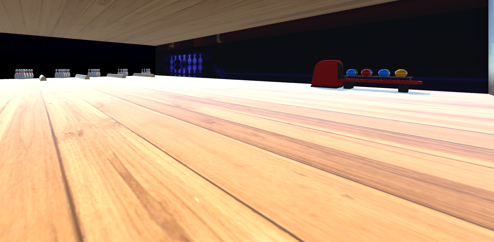
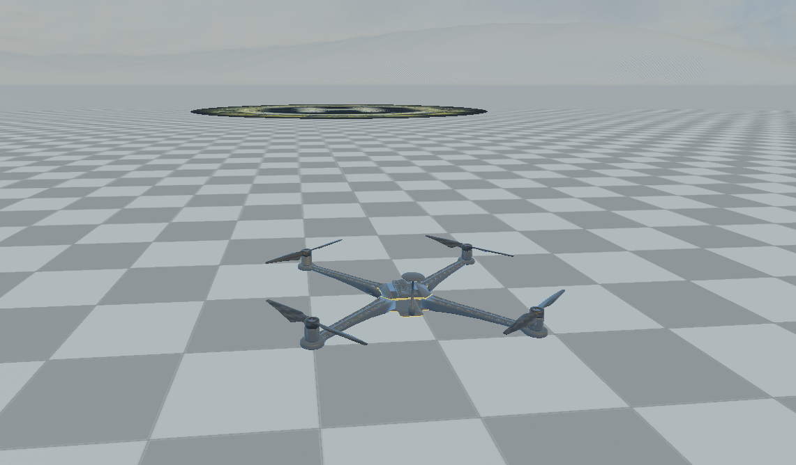

Behind the VR Wheel: Investigating the Impact of Assistance Systems on Driver Behavior
Bachelor's Thesis for my Computer Science degree in Paderborn University.
View PDF
Java Developer | Unity Developer | VR Developer | Game Developer | Master's Student in Computer Science at Paderborn University specialized in Machine Learning
Master's student in Computer Science with a specialization in Data Science and Machine Learning. Several years of hands-on experience as a working student in German IT companies and as a research assistant at the SICP -- Software Innovation Campus Paderborn. Strong interests in Virtual Reality, Unity development, Machine Learning, LLMs, and interactive systems.
Bachelor's Thesis for my Computer Science degree in Paderborn University.
View PDFSeminar project in my Computer Science degree in Paderborn University
View PDFCo-author and VR project development for a doctoral thesis in Bielefeld University
Paper on ResearchGateCo-author and VR project development for a doctoral thesis in Bielefeld University
Paper on ResearchGateResearch group project for my Master's degree was supervised by Dr. Enes Yigitbas at Paderborn University and presented at the 2026 10th International Conference on Intelligent Computing and Virtual and Augmented Reality Simulations (ICVARS).
View PDF
Interactive bowling VR game developed in Unity to learn the basics of VR development and VR settings in Unity.
View Project
Interactive Restaurant VR environment developed in Unity for a doctoral thesis in Bielefeld University.
View Project
VR environment in Unity for controlling virtual drones using Meta Quest controllers, LLM agents, and speech commands.
View ProjectYou can view or download my CV as a PDF file.
Contact me for collaborations, research discussions, project access, or professional opportunities.